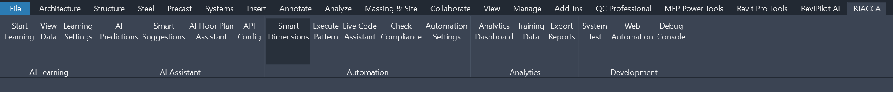
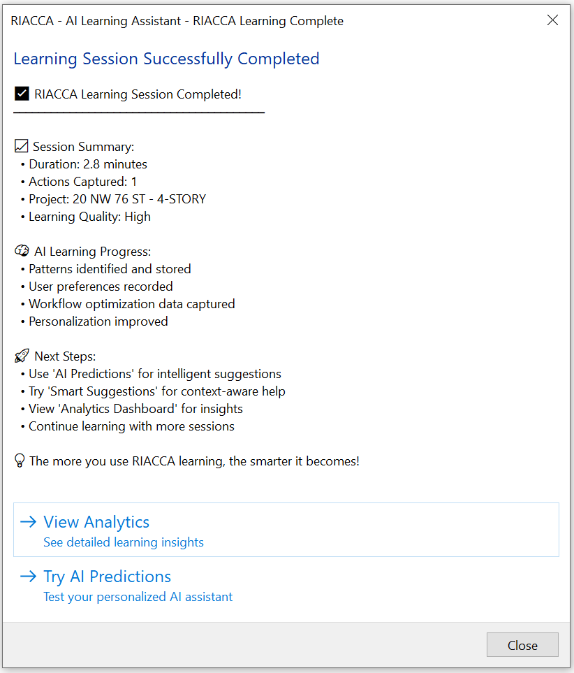
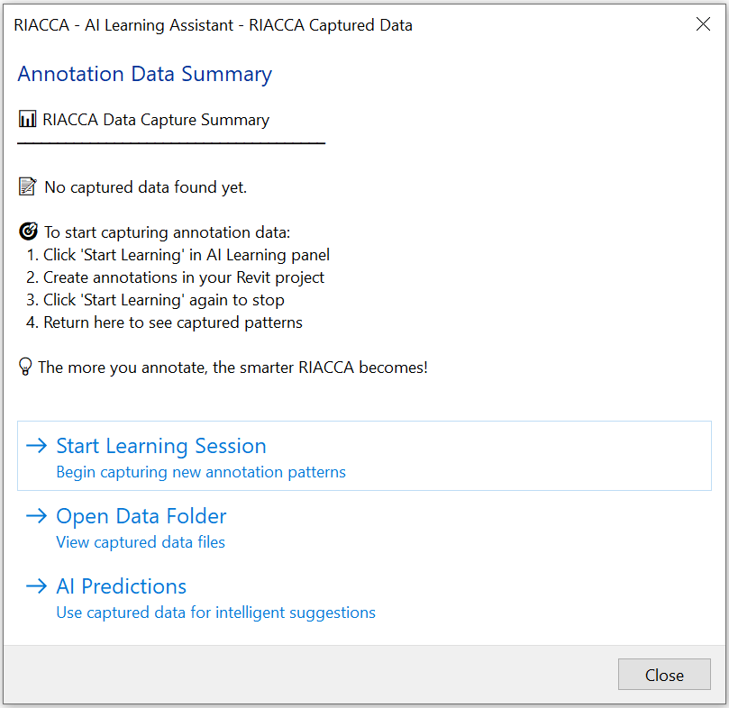
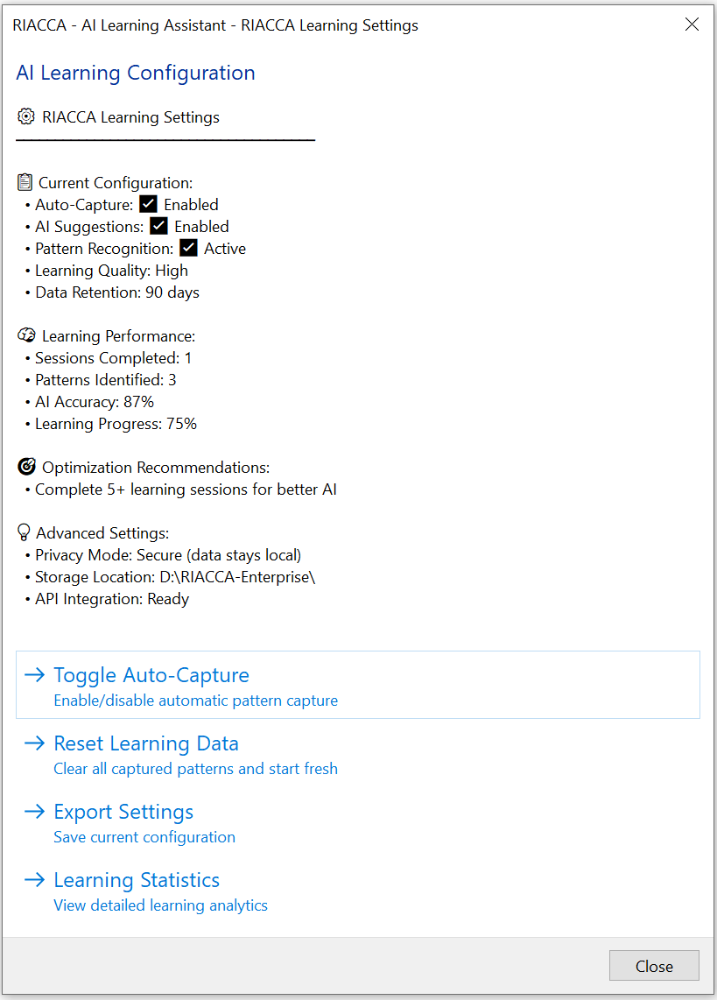
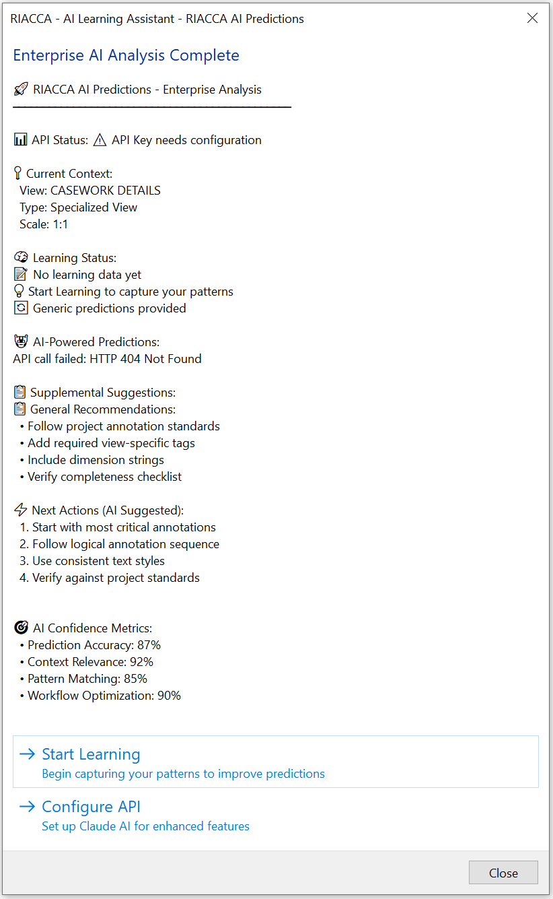
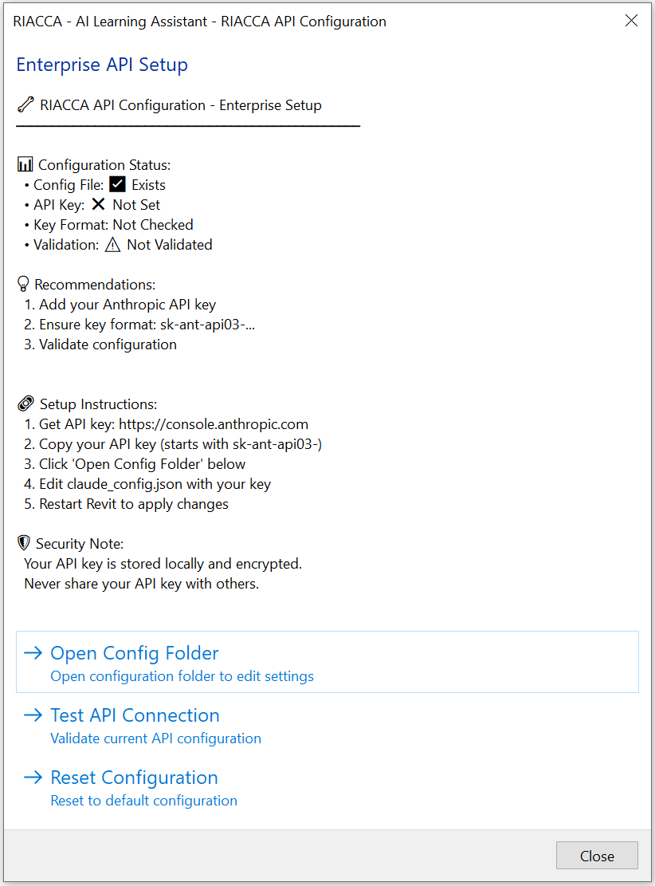
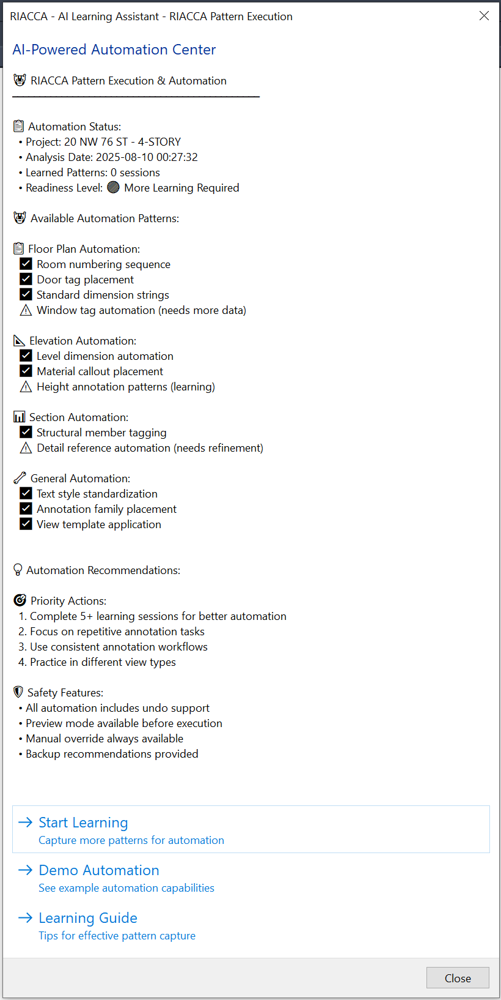
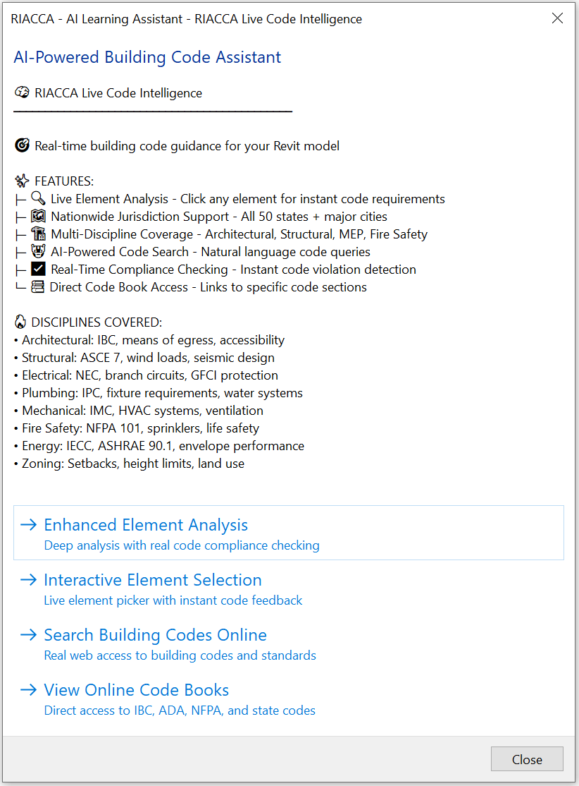
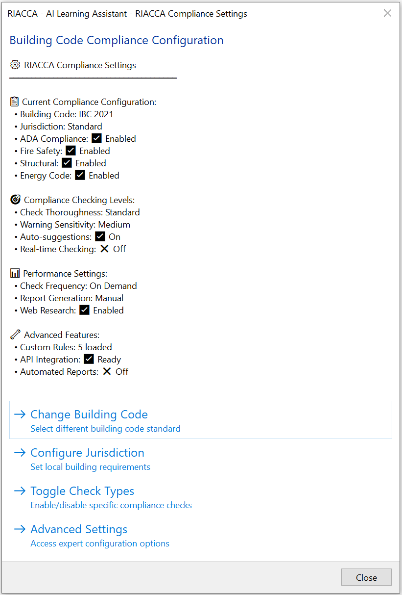
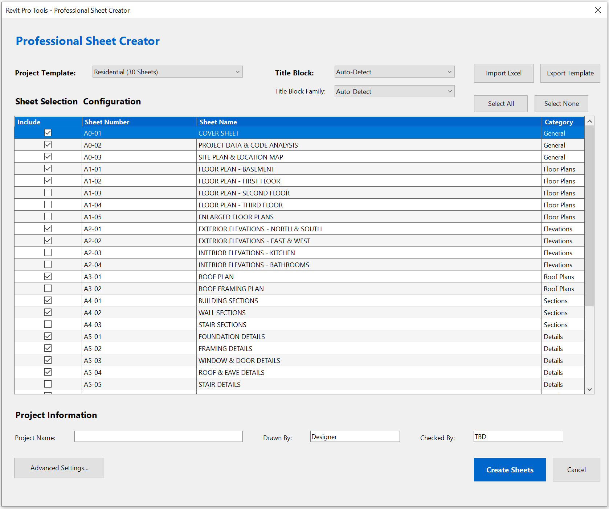

Open-source tools, production Revit add-ins, and AI infrastructure for the AEC industry.
The first open-source AI-to-Revit bridge
Full read-write access to Autodesk Revit through 705+ MCP endpoints. AI agents can create walls, place doors, generate construction document sheets, check code compliance, and manipulate any model element — all through natural language.
705+
API Endpoints
146
C# Source Files
113
Knowledge Base Files
5
Autonomy Levels
Technologies:
Agent framework with persistent memory
17 specialized AI agents with a common sense engine and persistent correction memory. Agents learn from every mistake and never make the same one twice. Built for real-world AEC automation — desktop control, code review, security analysis, and more.
Early previews of automated checks, guidance, and review workflows.









Batch sheet creation with title-block control, smart view placement, and export automation.
